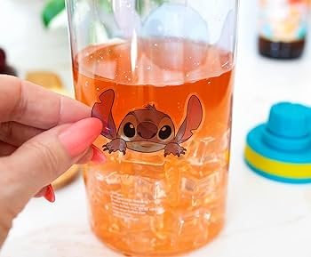
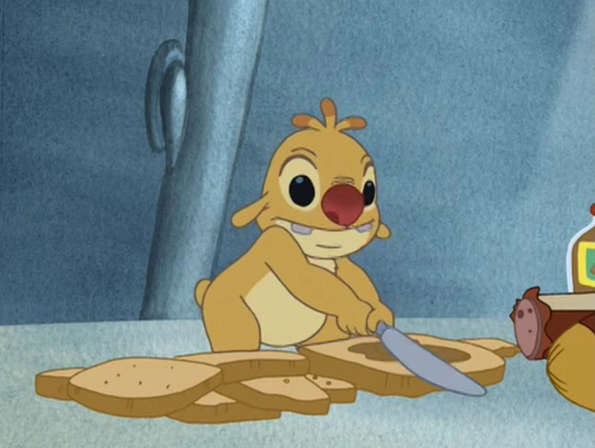

Mon Aventure Culinaire

Aloha ! Qui aurait cru qu'un jour, moi, l'Expérience 626, je me découvrirais une passion pour la cuisine ? Tout a commencé quand Lilo m'a fait goûter ces délicieux plats hawaïens. Depuis, je ne peux plus m'arrêter d'expérimenter en cuisine !
Le Saviez-vous ?
Ma première tentative de cuisine s'est soldée par une explosion de noix de coco dans toute la cuisine. Nani n'était pas très contente, mais le goût était... explosif ! 🥥💥
Ma Recette Spéciale : Smoothie Tropical Intergalactique
Ingrédients :
- 2 mangues mûres 🥭
- 1 ananas frais 🍍
- 3 bananes 🍌
- Jus de 2 fruits de la passion
- Lait de coco
- Glaçons colorés (mon secret pour l'effet galaxie !)
Préparation :
- Coupez tous les fruits en morceaux
- Mixez avec le lait de coco
- Ajoutez les glaçons colorés
- Décorez avec une ombrelle et une paille spatiale !
Le Sandwich Ohana
Mon sandwich préféré, créé avec amour pour toute la famille. Un mélange de saveurs hawaïennes et de touches personnelles qui fait sourire à chaque bouchée !
"La cuisine, c'est comme l'ohana : il faut mettre beaucoup d'amour dedans !"- Stitch, Chef Cuisinier Intergalactique
Mes Conseils de Chef
🌺 Utilisez des Ingrédients Locaux
Les fruits frais d'Hawaï donnent les meilleures saveurs !
🌈 N'Ayez Pas Peur des Couleurs
Plus c'est coloré, plus c'est appétissant !
💫 Expérimentez
Les meilleures recettes viennent parfois des erreurs !